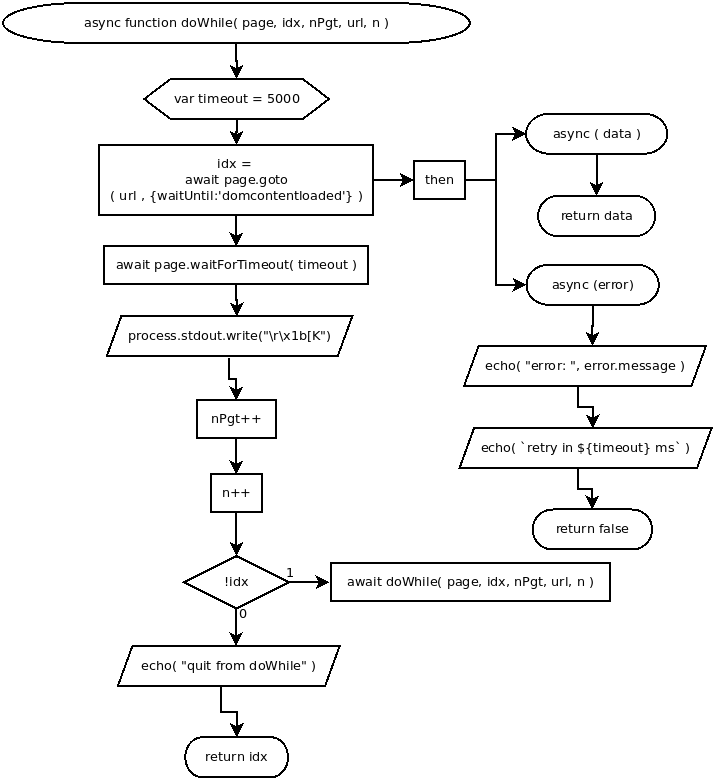

async doWhile(page, idx, nPgt, url, n)
Flowchart

Code
async doWhile( page, idx, nPgt, url, n ){
var timeout = 5000;
idx = await page.goto( url , {waitUntil:'domcontentloaded'} )
.then(
async ( data )=>{ return data; },
async ( error )=>{
echo( "error: ", error.message );
echo( `retry in ${timeout} ms` );
return false;
}
);
await page.waitForTimeout( timeout );
process.stdout.write("\r\x1b[K");
nPgt++;
n++;
if( !idx ){
await doWhile( page, idx, nPgt, url, n );
} else {
echo( "quit from doWhile" );
return idx;
}
}